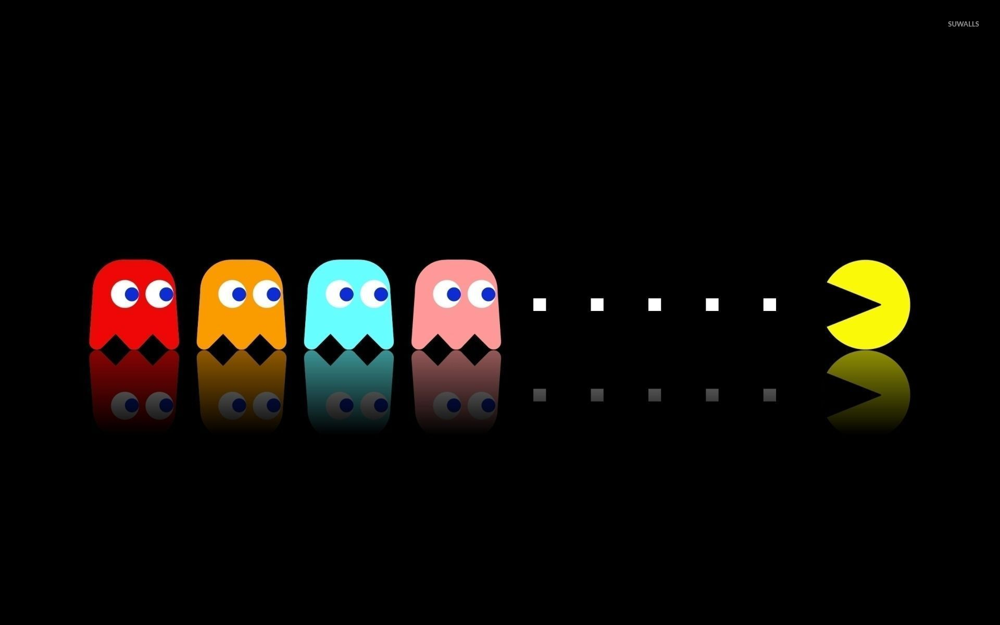
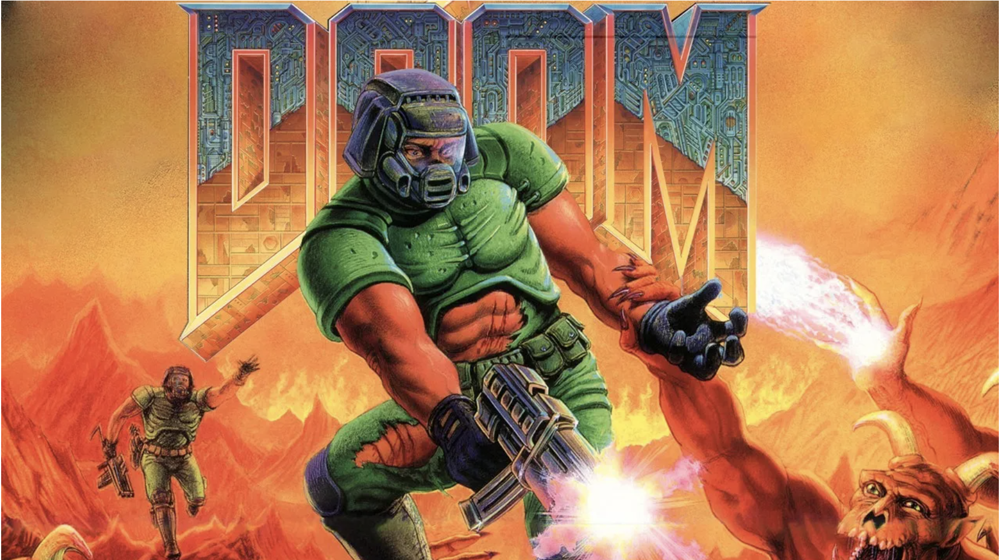
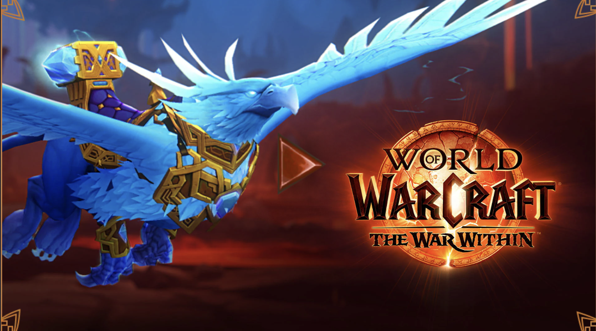

The History of Video Games
Click the button to discover a video game history fact!
1970s - The Beginning
The first commercial arcade video games were introduced in the early 1970s, with Pong leading the way...
1980s - The Golden Age
The 1980s saw the rise of iconic games like Pac-Man, Super Mario Bros, and the Nintendo Entertainment System...
1990s - 3D Revolution
The 1990s brought 3D graphics with games like Doom and the PlayStation console...
2000s - Online Gaming Era
The 2000s marked the rise of online gaming with World of Warcraft, Xbox Live, and revolutionary titles like Grand Theft Auto III and Halo...
2010s - Mobile & Social Gaming

The 2010s saw the explosion of mobile gaming, esports, and social gaming platforms. Games like Minecraft, Fortnite, and Pokemon GO redefined gaming culture...
2020-2024 - Virtual Reality & AI

The early 2020s brought mainstream VR adoption with Meta Quest, cloud gaming services, and AI-powered gaming experiences. Major releases like Cyberpunk 2077, Elden Ring, and advanced VR titles pushed gaming boundaries...